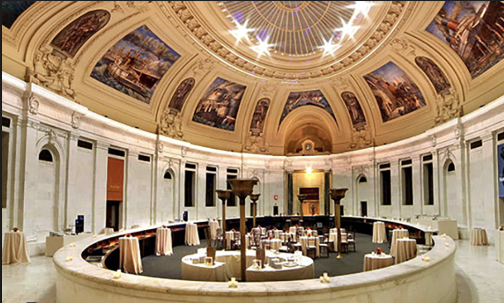

“We endeavor to collaborate, consult, and cooperate with Indigenous people and communities as a means to foreground their perspectives, knowledge, and experiences in our exhibitions, collections documentation, programs, and projects. This philosophical and ethical approach has been a part of the museum since its inception and remains fundamental to the museum's identity.” -Cynthia Chavez Lamar, Director of the National Museum of the American Indian
Address:
Alexander Hamilton U.S. Custom House
One Bowling Green
New York, NY 10004
Website
When you approach the facade of the National Museum of the American Indian (NMAI) in lower Manhattan you’d be forgiven for thinking you might be in the wrong place. The stone is imposing and the columns speak of government power. It’s possible that the exterior of the museum will remind you more of government soldiers than of indigenous heritage. However, the museum inside the doors of the Alexander Hamilton Custom House exemplifies museum practices that center the voices of the communities they seek to represent. The NMAI has become a national leader in creating a dynamic cultural center that gives access to priceless historic artifacts, exhibits modern and cutting edge indigenous artists, leads a national educational program and does it all in communication with indigenous communities and leaders.
Once you enter the building and make your way to the second floor, you’ll find yourself in a bright and airy oval atrium. The ceiling is a glass dome, wrought with intricate metal work and surrounded by frescoes. Beneath it, a ring of benches surrounds a carpeted area where, depending on the day, there may be an exhibit you can experience in the round, or there may be a few young children playing while their caregivers look on. The exhibition spaces branch off from this central atrium like flower petals.
In the permanent “Infinity of Nations” exhibition you’ll have the chance to see rare and historic artifacts from indigenous nations across the Americas. Perhaps you’ll pause at a Mayan limestone relief showing a ball game in action, or the showstopping Kayapó krok-krok-ti, a headdress of heron and macaw feathers. Moving from one glass case to another, you’ll perhaps feel the breadth and depth of indigenous sovereignty in the Americas. The museum’s decision to group artifacts from many different nations and regions together ran the risk of repeating old patterns of indigenous representation by collapsing these distinct histories into one story, but in fact the results are the opposite. The space speaks to the incredible diversity of indigenous culture, while also highlighting each distinct artifact. .
A word on the history of the museum. The bulk of the historic collection are the results of the efforts of one man; George Gustave Heye (1874-1957), an American son of German immigrants, who began collecting artifacts in New Mexico in 1903. He went on to make a small fortune in investment banking, from which he retired early to devote himself to collecting indigenous artifacts full time. There were many wealthy men of his time who took to this notion of “collecting” indigenous artifacts, with all the potential paternalism such a practice implies, but if you look into Heye you’ll find that he was known to have some of the most professional practices of his generation and by 1916 he was seeking to make his collection accessible to the public. The first iteration of the museum was housed in a small building on 155th and Broadway where only 1% of its estimated 1 million objects could be displayed. Eventually it was transferred to the Smithsonian Institute, and finally upon the completed renovation of Alexander Hamilton Customs House, the New York City branch of the National Museum of the American Indian opened. (Technically, the National Museum of the American Indian spans three sites: the museum on the National Mall of Washington DC, the NYC museum, and the Cultural Resources Center in Suitland, Maryland.)
Today the museum is led by Cynthia Chavez Lamar, who began her tenure at the museum as an intern, before moving through the institution’s leadership to become its director. She is also a San Felipe tribal member, who believes in the power of one’s cultural heritage to shape decision making in the present.
Once you leave the “Infinity of Nations” exhibit, you may find yourself in conversation with the artists of your moment, in one of the many rotating exhibitions of modern indigenous artists. If you’re an educator you may sign up for a workshop with Native Knowledge 360°, an educational program which is transforming how indigenous cultures are taught in classrooms across the country.
By the time you exit, once again passing under its imposing stone facade and sculptures, you’ll have spent time with centuries of indigenous life, including your own century and current moment.